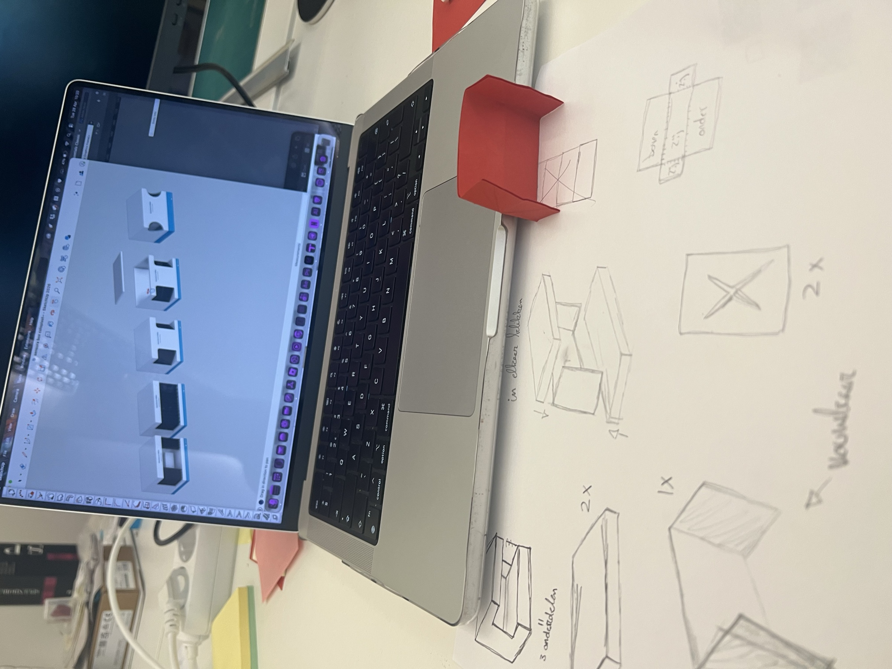
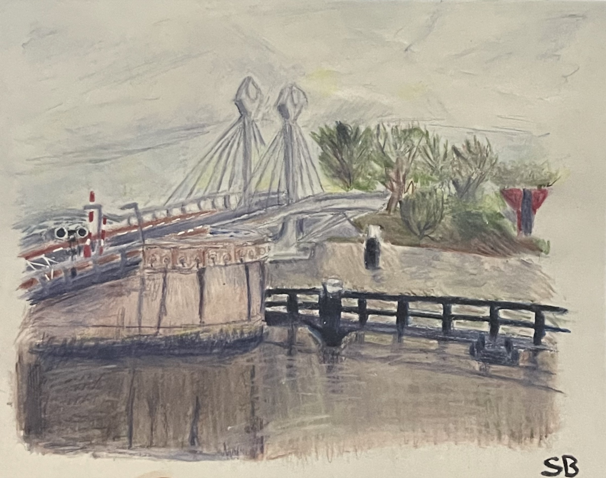
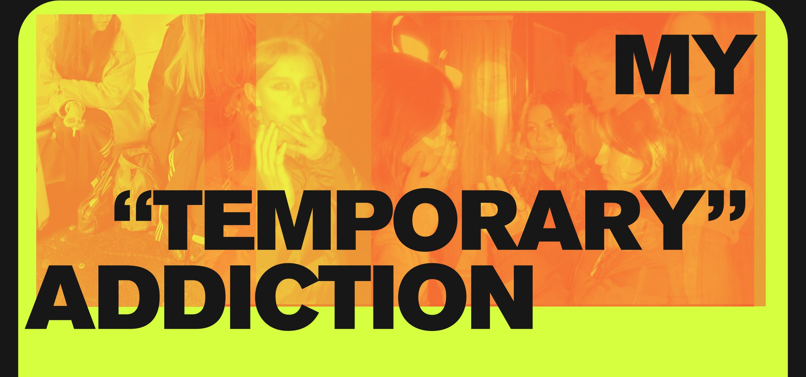

01 — CONCEPT DEVELOPMENT
FASTBOT
01
Concept Development & 3D Visualisation
View project A mobile robot concept for drivers while their cars charge.
I’m a third-year creative business student at Cibap in the Netherlands. I enjoy experimenting with ideas, exploring different creative disciplines, and finding my own way of making things.
Seeking a spatial design internship at an international company, starting in February 2027 and running until approximately June 2027.
A mobile robot concept for drivers while their cars charge.

Internship

A study in photography, image editing and graphic composition.
View photography

I study International Creative Business Developer (ICBD) at Cibap in Zwolle, the Netherlands. It is a broad, bilingual design programme with a foundation in Spatial Design, combining concept development, research, visual communication and spatial design.
During my studies, I work on different kinds of creative projects, from developing concepts and visual identities to designing physical spaces and experiences. I use programmes such as Adobe Photoshop, Illustrator and InDesign, as well as SketchUp and Twinmotion for 3D design and visualisation.
I especially enjoy the variety within my education. Rather than focusing on one specific type of design, I like exploring different creative disciplines and combining visual and spatial ideas. I am currently looking to broaden this further by gaining experience in areas such as set design, creative production, photography and film.
I am seeking a spatial design internship at an international company, starting in February 2027 and running until approximately June 2027. Have an internship opportunity or want to know more about my work? I’d love to hear from you.